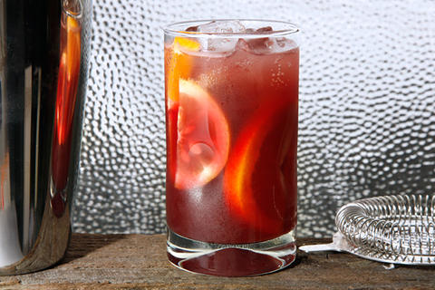

Sangria
Sangria is (usually) an alcoholic beverage people consume with breakfast or dinner. This recipe makes one serving of sangria to go with your breakfast.

Materials:
- Cocktail shaker
- Drinking glass
Ingredients
- 3 ounces red wine
- 1 1/2 ounces pineapple juice
- 3/4 ounce Cognac
- 2 orange slices, plus more for garnish
- 2 lime slices, plus more for garnish
- 2 lemon slices, plus more for garnish
- 2 to 3 ounces soda water or lemon-lime soda
- Ice